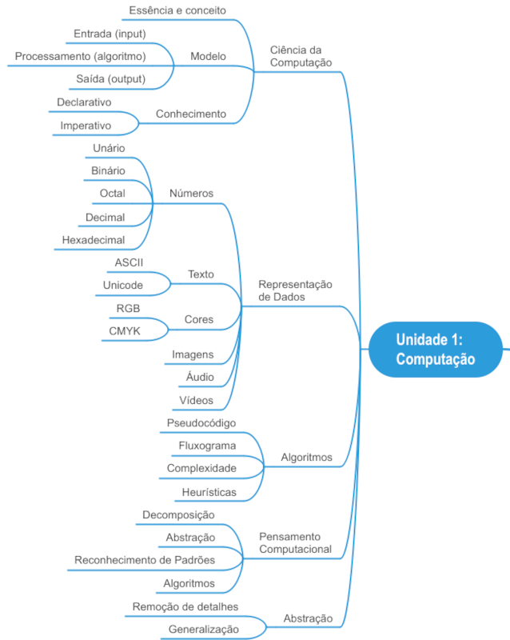
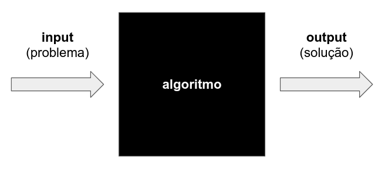

Unidade 1: computação
Nesta unidade começaremos nosso estudo sobre computação e, mais especificamente, sobre ciência da computação. Nosso objetivo é fazer com que você entenda os grandes fundamentos da computação, incluindo:
- O que é ciência da computação
- Representação de dados no computador
- Algoritmos
- Pensamento computacional
- Abstração
O conteúdo desta unidade está dividido em 6 partes, sendo a primeira parte uma visão geral do que estudaremos. Em cada parte você encontrará o vídeo da aula, o texto correspondente e demais recursos. Utilize o sumário abaixo para navegar no conteúdo da unidade.
Sumário:
- PARTE 0: visão geral da unidade
- PARTE 1: o que é ciência da computação?
- Diário de Aprendizagem
PARTE 0: visão geral da unidade
Esta unidade compreende o estudo dos fundamentos da computação e dará a base a partir da qual você aprenderá os pilares da computação e formará uma fundação para as próximas unidades. Se você ainda não terminou as atividades da Unidade 0: introdução, é importante que você não prossiga: estude primeiro a Unidade 0 (incluindo fazer o diário de aprendizagem) e, depois, continue aqui na Unidade 1.
Nesta Unidade 1 falaremos sobre os grandes fundamentos da computação, incluindo discussões sobre: a) o que é ciência da computação; b) representação de dados em um computador; c) algoritmos; d) pensamento computacional; e, por último, e) abstração. A abstração, na verdade, é um dos componentes do pensamento computacional mas, de tão importante, merece uma discussão detalhada em separado. Este é o conteúdo desta unidade:

PARTE 1: o que é ciência da computação?
Vídeo da parte 1: o que é ciência da computação?
Essência e conceito da ciência da computação
Existe uma certa confusão sobre o que é realmente a ciência da computação. Muitas pessoas acreditam que computação é praticamente um sinônimo de programação. Esse entendimento não é correto: a programação nos permite expressar idéias e resolver problemas através de computadores mas a essência da ciência da computação não depende de programação.
Ciência da computação NÃO É sobre programação.
Outras pessoas acreditam que ciência da computação é o trabalho com computadores. Mas essa visão também não é correto: os computadores são meras ferramentas de trabalho, são ferramentas fantásticas que programamos para nos ajudar a resolver problemas de forma mais rápida, mas a essência da ciência da computação também não depende de computadores.
Ciência da computação NÃO DEPENDE de computadores.
Na realidade a ciência da computação é sobre resolver problemas de um certo modo, de uma certa maneira. Mas como formalizar então qual é a essência da ciência da computação? Talvez uma das melhores explicações sobre a essência da ciência da computação foi dada por Hal Abelson, um dos autores do soberbo livro Structure and Interpretation of Computer Programs (SICP), em uma aula para funcionários da Hewlett-Packard, em julho de 1986. Abelson explica o que é a ciência da computação do seguinte modo:
[A ciência da computação] Também não se trata muito de computadores. E não se trata de computadores no mesmo sentido em que a física não se trata realmente de aceleradores de partículas, e a biologia não se trata realmente de microscópios e placas de Petri. E não se trata de computadores no mesmo sentido em que a geometria não se trata realmente do uso de instrumentos topográficos.
Na verdade, há muitos pontos em comum entre a ciência da computação e a geometria. A geometria, antes de mais nada, é outra disciplina com um péssimo nome. O nome vem de Gaia, que significa Terra, e metron, que significa medir. Geometria, originalmente, significava medir a Terra ou fazer levantamentos. E a razão para isso foi que, há milhares de anos, o sacerdócio egípcio desenvolveu os rudimentos da geometria para descobrir como restaurar os limites dos campos que foram destruídos pelas cheias anuais do Nilo. E, para os egípcios que fizeram isso, a geometria era realmente o uso de instrumentos topográficos. Agora, a razão pela qual pensamos que a ciência da computação trata de computadores é praticamente a mesma razão pela qual os egípcios pensavam que a geometria tratava de instrumentos de levantamento. E isto é, quando alguma área está apenas começando e você não a entende muito bem, é muito fácil confundir a essência do que você está fazendo com as ferramentas que você usa. E, de fato, numa escala absoluta de coisas, provavemente sabemos menos sobre a essência da ciência da computação do que os antigos egípcios realmente sabiam sobre geometria.
Bem, o que eu quero dizer com essência da ciência da computação? O que quero dizer com essência da geometria? Veja, é certamente verdade que esses egípcios usavam instrumentos de topografia, mas quando olhamos para eles depois de alguns milhares de anos, dizemos, caramba!, o que eles estavam fazendo, a coisa importante que estavam fazendo [a essência da geometria], era começar a formalizar noções sobre espaço e tempo, para iniciar uma maneira de falar formalmente sobre verdades matemáticas. Isso levou ao método axiomático. Isso levou a que toda matemática moderna descobrisse uma maneira de falar precisamente sobre o chamado conhecimento declarativo, sobre o que é verdadeiro.
Bem, da mesma forma, acho que no futuro as pessoas olharão para trás e dirão, sim, aqueles primitivos do século 20 estavam brincando com esses dispositivos chamados computadores mas, na verdade, o que eles estavam fazendo era começando a aprender como formalizar intuições sobre processos, sobre como fazer as coisas, começando a desenvolver uma forma de falar precisamente sobre o conhecimento de como fazer alguma coisa [conhecimento imperativo], em oposição à geometria que fala sobre o que é verdadeiro [conhecimento declarativo].
Quando achamos que ciência da computação é sobre programação e computadores, estamos confundindo a essência da computação com as ferramentas que são utilizadas (os computadores). Quando uma nova área de estudo está sendo desenvolvida é fácil confundir a essência com as ferramentas, e é essa confusão que nos faz achar que ciência da computação é sobre computadores (a ciência da computação é muito nova). Na verdade a essência da ciência da computação é formalizar “receitas” (chamadas de algoritmos) que nos permitem saber como fazer as coisas, sobre como resolver problemas. Em resumo, podemos dizer que:
CIÊNCIA DA COMPUTAÇÃO É A CIÊNCIA QUE PROJETA E IMPLEMENTA ALGORITMOS PARA SOLUCIONAR PROBLEMAS.
Nós estudaremos em detalhes o que é um algoritmo. Por ora basta entender que um algoritmo é uma “receita” que seguimos para resolver um determinado problema, para realizar um determinado processo. A palavra algoritmo (bem como a palavra algarismo) foi criada a partir do nome de um matemático persa que viveu entre os séculos VIII e IX (c. 780 - c. 850) chamado de Abū Abd Allāh Muḥammad ibn Mūsā al-Khwārizmī (Pai de Abdullah, Mohammed, filho de Moisés, nativo de Khwarizm). Al-Khwārizmī foi um gênio matemático à época, e seus trabalhos introduziram os numerais hindu-arábicos e os conceitos de álgebra na matemática ocidental. Alguns de seus trabalhos descreviam um modo sistemático de obter soluções para equações quadráticas, ou seja, uma “receita” a ser seguida. A foto abaixo é uma estátua em sua homenagem, na cidade de Khiva, atual Uzbequistão:
Modelo geral da computação
Quando falamos que a ciência da computação resolve problemas, uma pergunta óbvia é: como a computação resolve os problemas? Na verdade existe um “modelo geral” através do qual a computação resolve problemas. Esse modelo de computação pode ser ilustrado na figura abaixo:

A partir de um determinado problema, fazemos o input (entrada) do problema no computador. Esse problema será tratado por um algoritmo (a “receita” para a solução do problema) e o computador fará o output (saída) da solução. Esse modelo é muito importante: toda vez que você pretende resolver um problema de forma computacional, você deve pensar e se fazer as seguintes perguntas?
- Qual é o input (entrada), ou seja, qual é o problema que eu quero resolver?
- Qual é o output (saída), ou seja, qual é a solução esperada do problema?
- E, por fim, que algoritmo me permite processar a entrada (o problema) e obter a saída correta (a solução)?
Atenção: não subestime a segunda pergunta, a solução esperada para o problema. Muitas pessoas tendem a se focar somente no problema e não têm uma visão clara de qual deve ser a solução correta, a solução esperada para o problema. Se você não tem clareza em qual deveria ser a solução correta, é mais difícil encontrar um algoritmo. Como você vai achar um algoritmo para transformar o input no output, se você não sabe em que output quer chegar?
Conhecimento declarativo e imperativo
(em breve)